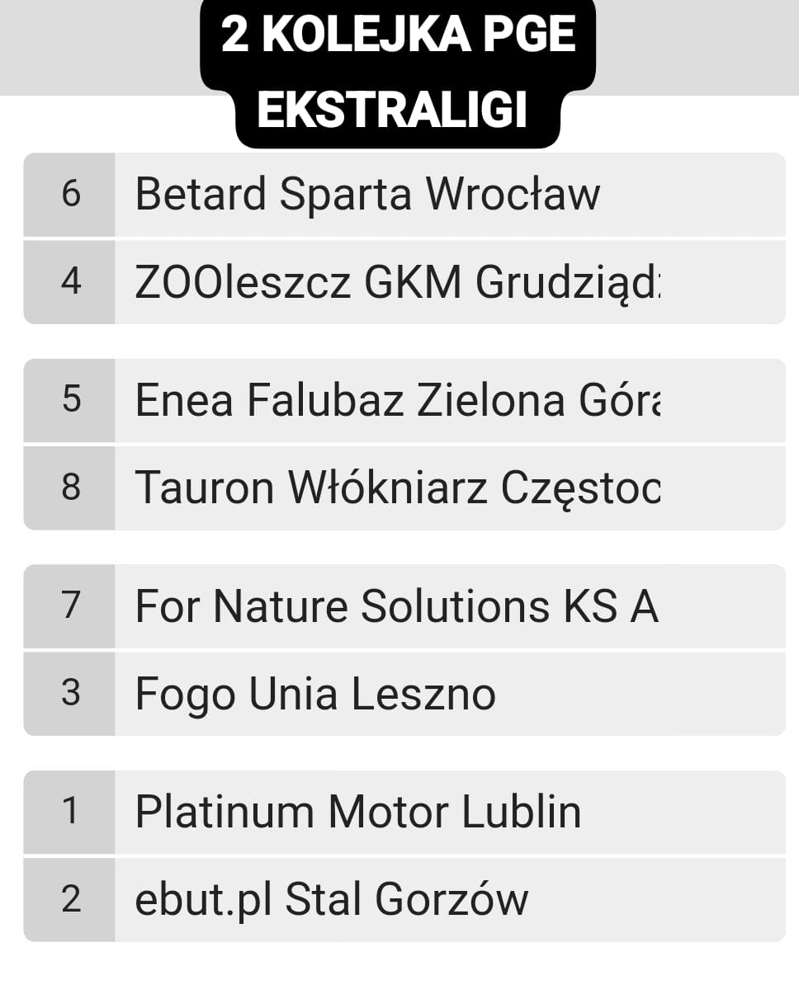

Newsy ze świata SC2023!!!
3 Kolejka symulowanej PGE Ekstraligi

Właśnie zakończyła się 3 kolejka symulowanej PGE Ekstraligi i o to wyniki
Wrocław rozdudnił Falubazów wynikiem 51:39 (bez większego zaskoczenia)
Grudziądz Toruń jak to derby było dosyć ciekawie finalnie zakończyło się wynikiem 48:42 dla Grudziądza. Były mała zadymka pod stadionem ale zakończyło się bez śmierci
I jakiś Mikol ukarał Toruń za to
Leszno Lublin zostało odwołane a Lublin wygrywa bo Michał tak mówi
Częstochowa rozdudniła Gorzów wynikiem 52:38
I jak wam źle albo dobrze w życiu to kup Red Bull Energy to będzie lepiej (materiał sponsorowany)
Toruń zaplanował zamieszki w meczu z Grudziądzem?

Jako iż ostatnio odbyły się zamieszki na meczu Toruń Grudziądz pojawiło się dużo podejrzeń dlaczego to się stało
Kilka anonimów twierdzi że "ludzie odpowiedzialni za Toruń brali w tym udział" dalej jest to tylko spekulacja ale nie mamy o czym pisać więc taki smaczek
Mnom